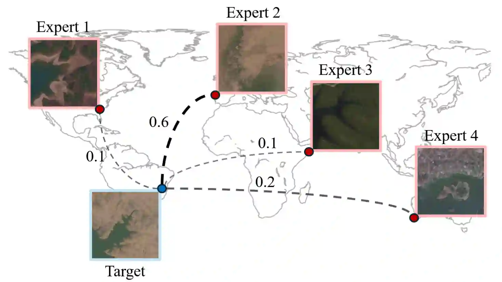
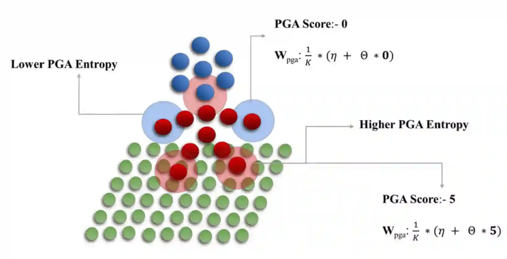
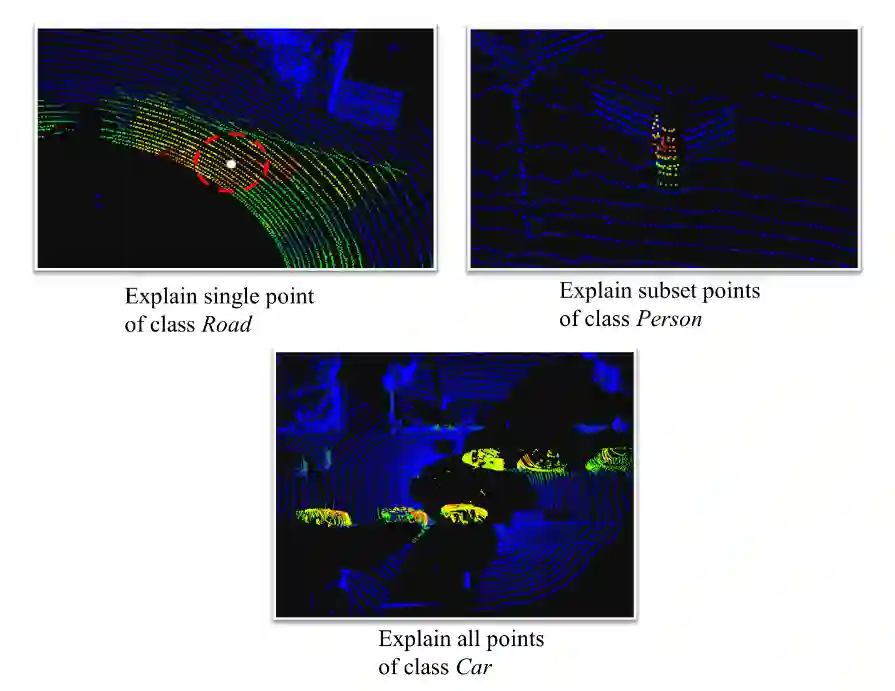
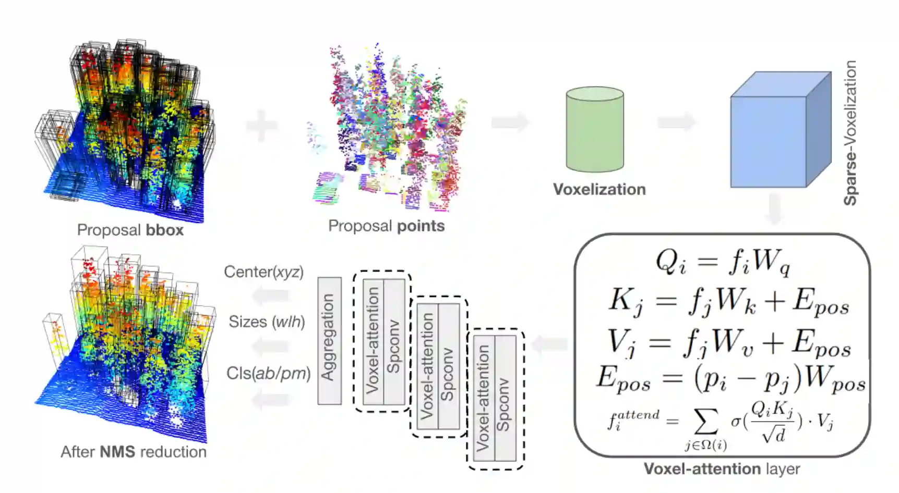
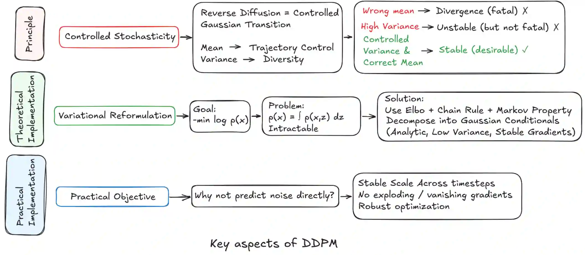

👋 Hello!
I am a recent Master’s graduate in Data Science and Artificial Intelligence from IISER-B. My prior research focuses on semantic segmentation, interpretability of point cloud architectures, and spatial generalization in satellite imagery.
Recently, I worked as a Research Engineer at Imagine Lab, École des Ponts ParisTech, France, and previously interned at CRDIG, Université Laval, Canada, as a summer intern.
I am currently seeking Researcher/PhD opportunities in 3D computer vision, mathematical modeling and related fields.
I am also a 3D artist! Would love to work on simplifying the complex Geometry Node workflows using vision driven intelligence.
📚 Research Work

CoDEx: Combining Domain Expertise for Spatial Generalization in Satellite Image Analysis
EarthVision 2025 - CVPR Workshop
Spatial domain generalization for satellite imagery using region-specific expert models.

pCTFusion: Point Convolution-Transformer Fusion with Semantic Aware Loss
Journal of Computer Science (Springer Nature), 2024
A hybrid convolution-attention architecture emphasizing semantic boundaries with position-aware loss.

pGS-CAM: Interpretable LiDAR Point Cloud Segmentation via Gradient-Based Localization
ICLR 2023 (Tiny Papers Track)
First study on gradient-based localization for LiDAR semantic segmentation. Enables interpretable saliency maps in 3D networks.

Individual Tree Extraction in Airborne LiDAR Point Clouds of Boreal Forest Environments
Master Thesis
Deep learning-based individual tree detection from airborne LiDAR in Canadian boreal forests.
🏆 Awards & Fellowships
-
•
European Research Council (ERC): Project DISCOVER, number 101076028
-
•
MITACS GRI: Awarded MITACS GRI fellowship (2023) for internship in Canada among students participating over 17 countries globally.
-
•
TiHAN IIT-H Startup: Selected for initial startup funding of 7200 USD by TiHAN IIT-Hyderabad for a project related to Conditional LiDAR generation.
-
•
Academic Poster Presentation: Awarded best academic poster presentation on National Engineer’s Day (15 September 2022), India held at IISERB campus.
📖 Expository Articles

Unpacking DDPMs: What's Really Going On?
Technical Note, 2026
Diving deeper into the mathematical beauty and intricacy of Denoising Diffusion Probabilistic Models (DDPMs).